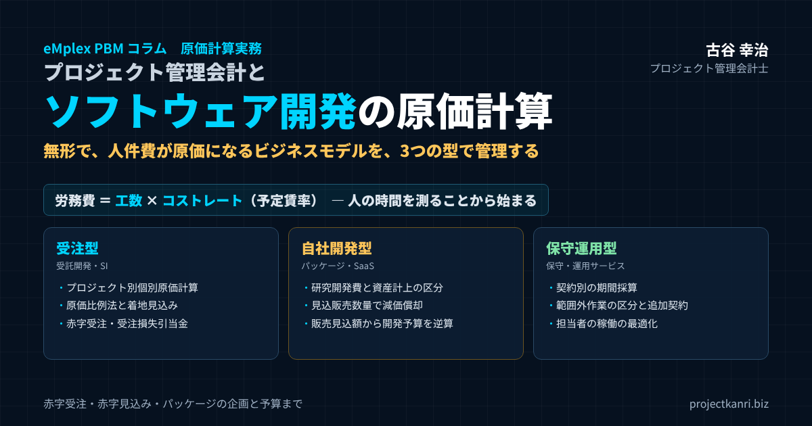

プロジェクト管理会計とソフトウェア開発の原価計算―受注型・自社開発型・保守運用型のビジネスモデル別に、人件費原価・赤字受注・パッケージ開発の予算と販売見込額まで

結論：ソフトウェア開発の原価計算は「人の時間」と「ビジネスモデル」で決まる
この記事の要点
- 原価の特徴：無形の成果物、原価の大部分は人件費、その多くは固定費
- 人件費の原価化：工数×コストレート（予定賃率）で労務費を計算
- 受注型：プロジェクト別の個別原価計算、原価比例法、赤字受注の判断と受注損失引当金
- 自社開発型：研究開発費／市場販売目的／自社利用（SaaS）の区分、見込販売数量による償却、販売見込額から開発予算を逆算
- 保守運用型：契約別の期間採算、範囲外作業の区分と追加契約
プロジェクト管理会計士の古谷です。今回は、ソフトウェア開発の原価計算を取り上げます。システム開発の会社、ソフトウェアを自社で開発して販売する会社、そして保守や運用のサービスを提供する会社。いずれも、ソフトウェアという形のないものを扱うビジネスです。
結論から申し上げます。ソフトウェア開発の原価計算は、二つのことで決まります。一つ目は、人の時間を原価として正しく測ることです。ソフトウェア開発の原価の大部分は、エンジニアやプロジェクトマネージャーの人件費です。誰が、どのプロジェクトに、何時間を使ったのか。この工数の記録と、一時間あたりの原価であるコストレートがなければ、ソフトウェア開発の原価計算は始まりません。
二つ目は、ビジネスモデルに合わせて原価を扱うことです。顧客から受注してソフトウェアを開発する受注型、自社の製品としてソフトウェアを開発して販売する自社開発型、そして完成したシステムを保守し運用する保守運用型。同じ人件費でも、どのビジネスモデルで使われたかによって、原価の集め方も、会計の処理も、管理の要点もまったく異なります。
私は、エンプレックス（現SCSK）でCFOを務めていた頃、システム開発のプロジェクトの原価計算と、自社製品の開発の予算の管理に取り組みました。受注したプロジェクトの赤字、自社製品の開発費の膨張、保守契約の採算の悪化。どれも、人件費という一つの原価が、ビジネスモデルごとに違う顔を見せた結果でした。本稿では、その経験と、独立後に200社を超える企業を支援してきた経験をもとに、ソフトウェア開発の原価計算を、ビジネスモデル別に体系的にお伝えします。
ソフトウェア開発の原価の特徴：無形で、人件費が原価になるビジネス
ソフトウェア開発の原価には、製造業とは大きく異なる特徴があります。第一に、成果物に形がないことです。製造業であれば、材料が製品に姿を変え、完成品として倉庫に残ります。ソフトウェアは、どれだけの手間がかかったのかが、成果物を見ても分かりません。
第二に、原価の大部分が人件費であることです。材料費はほとんどかかりません。原価の中心は、エンジニアの労務費、外部の協力会社への外注費、そして開発に使うクラウドの利用料やソフトウェアのライセンス料などの経費です。多くの会社で、原価の七割から八割以上を、労務費と外注費が占めています。
| 原価の区分 | 主な内容 | 特徴 |
|---|---|---|
| 労務費 | 社員のエンジニア・PMの人件費（工数×コストレート） | 原価の中心。多くは固定費 |
| 外注費 | 協力会社・フリーランスへの開発委託費 | 案件ごとに変動しやすい |
| 経費 | クラウド利用料、ライセンス料、開発環境、出張費 | AIの利用料も今後増加 |
| 材料費 | ほとんど発生しない（ハードウェアを含む案件を除く） | 製造業との大きな違い |
第三に、人件費の多くが固定費であることです。正社員のエンジニアの給与は、プロジェクトがあってもなくても発生します。プロジェクトに使われなかった時間の人件費は、どのプロジェクトの原価にもならず、会社全体の負担として残ります。つまり、ソフトウェア開発の会社の利益は、プロジェクトごとの採算だけでなく、エンジニアの時間をどれだけプロジェクトに使えたか、つまり稼働率にも大きく左右されるのです。
第四に、原価の見積りが難しいことです。同じような機能のソフトウェアでも、要件の固まり具合、技術の難しさ、チームの経験によって、必要な工数は大きく変わります。見積りと実績の差が生まれやすく、それが赤字のプロジェクトの最大の原因になります。
こうした特徴を持つソフトウェア開発では、人の時間を測り、プロジェクトに正しく割り当てる仕組みが、原価計算の土台になります。
そして第五に、成果物の価値と原価が結び付きにくいことです。同じ工数をかけたソフトウェアでも、顧客にとっての価値は大きく異なります。原価を積み上げて価格を決めるだけでなく、顧客にとっての価値から価格を考える視点も、ソフトウェア開発の会社には欠かせません。
人件費を原価にする仕組み：工数とコストレートで労務費を計算する
人件費をプロジェクトの原価にするには、二つの情報が必要です。一つは工数、つまり誰がどのプロジェクトに何時間を使ったかという記録です。もう一つはコストレート、つまり一時間あたりの人件費です。工数にコストレートを掛ければ、プロジェクトごとの労務費が計算できます。
コストレートは、社員の給与や賞与、会社が負担する社会保険料などの法定福利費の合計を、年間の稼働可能な時間で割って求めます。個人ごとに計算する方法もありますが、個人の給与が推測できてしまうことや、計算の手間を考えると、職位や職種ごとの標準的なコストレートを使う方法が一般的です。原価計算の言葉でいえば、予定賃率の考え方です。
| 項目 | 金額・時間 | 計算 |
|---|---|---|
| 年間の給与・賞与＋法定福利費 | 960万円 | 職位の平均 |
| 年間の稼働可能時間 | 1,600時間 | ― |
| コストレート | 6,000円／時間 | 960万円÷1,600時間 |
| プロジェクトの工数 | 200時間 | タイムシートの承認済み工数 |
| プロジェクトの労務費 | 120万円 | 200時間×6,000円 |
※数値は説明のための例です。
たとえば、ある職位のエンジニアの年間の給与・賞与と法定福利費の平均が960万円で、年間の稼働可能な時間が1,600時間であれば、コストレートは1時間あたり6,000円です。このエンジニアがあるプロジェクトに200時間を使えば、そのプロジェクトの労務費は120万円になります。
ここで決めておかなければならないのが、オフィスの賃料や管理部門の費用といった間接費を、コストレートに含めるかどうかです。含めれば、プロジェクトの原価は会社全体の採算に近くなりますが、プロジェクトの責任者がコントロールできない費用まで原価に入ります。含めなければ、責任者の成果は見やすくなりますが、プロジェクトの粗利がすべて黒字でも、会社全体では赤字になることがあります。私は、プロジェクトの原価は直接の人件費で計算し、間接費は別に把握して、プロジェクトの粗利で間接費をどれだけ回収できているかを見る方法をお勧めしています。
そして、工数の記録の精度が、原価計算の精度を決めます。エンジニアが毎日、どのプロジェクトに何時間を使ったかをタイムシートに記録し、上長が承認する。プロジェクトに使っていない時間、たとえば社内の会議や研修、待機の時間も、区分して記録しておく。この記録がなければ、人件費を原価として正しく測ることはできません。
稼働率と原価：プロジェクトに使われなかった人件費をどう見るか
人件費の多くが固定費であるソフトウェア開発では、プロジェクトに使われなかった時間の人件費をどう扱うかが、経営の数字を大きく左右します。
たとえば、エンジニアが10人、一人あたりの年間の人件費が960万円の会社を考えます。人件費の総額は9,600万円です。稼働率、つまり稼働可能な時間のうちプロジェクトに使われた時間の割合が80％であれば、プロジェクトの原価になるのは7,680万円で、残りの1,920万円は、どのプロジェクトの原価にもなりません。この1,920万円は、待機や社内の業務、研修などに使われた時間の人件費であり、会社全体の負担になります。
| 項目 | 金額 |
|---|---|
| エンジニア10人の年間人件費 | 9,600万円（960万円×10人） |
| 稼働率 | 80％ |
| プロジェクトの原価になる人件費 | 7,680万円 |
| 未稼働の人件費（待機・社内業務・研修など） | 1,920万円 |
※数値は説明のための例です。
この未稼働の人件費を、原価計算の上でどう扱うかには、いくつかの考え方があります。期間の費用として、販売費及び一般管理費や原価差額として処理する方法、あるいは稼働可能な時間ではなく、実際の稼働時間でコストレートを計算し、プロジェクトの原価に含めてしまう方法です。後者の方法では、プロジェクトの原価が膨らみ、どのプロジェクトも採算が悪く見えます。私は、プロジェクトの原価は稼働可能な時間で計算したコストレートで測り、未稼働の人件費は別に見える化することをお勧めしています。そうすれば、プロジェクトの採算の問題と、稼働率の問題を、分けて議論することができます。
稼働率を上げることは、ソフトウェア開発の会社にとって、プロジェクトの粗利を上げることと同じくらい重要な経営の課題です。営業の受注の見込みと、エンジニアの空きの見込みを突き合わせ、空きが生まれる前に次の案件を準備する。それが、未稼働の人件費を減らす最も確実な方法です。
ソフトウェア開発の3つのビジネスモデル：受注型・自社開発型・保守運用型
ソフトウェア開発のビジネスは、大きく三つのモデルに分けられます。それぞれのモデルで、売上の立ち方も、原価の性格も、会計の処理も異なります。多くの会社は、この三つを組み合わせて事業を営んでいます。
| 項目 | 受注型 | 自社開発型 | 保守運用型 |
|---|---|---|---|
| 売上の立ち方 | プロジェクトごとの契約 | 製品の販売・利用料（完成後） | 月額・年額の保守料 |
| 原価の集め方 | プロジェクト別の個別原価計算 | 開発プロジェクト別に集計 | 契約別・期間別に集計 |
| 会計の論点 | 収益認識（原価比例法）、受注損失引当金 | 研究開発費と資産計上、減価償却 | 期間の費用、範囲外作業の売上 |
| 管理の要点 | 見積精度、着地見込み、変更管理 | 販売見込額、開発予算、回収 | 期間採算、範囲外作業、担当者の稼働 |
| 典型的な赤字の原因 | 見積の甘さ、追加要望の無償対応 | 開発費の膨張、販売不振 | 範囲外作業の無償対応、障害対応 |
受注型は、顧客の注文を受けて、その顧客のためのソフトウェアを開発するモデルです。受託開発、システムインテグレーションとも呼ばれます。プロジェクトごとに契約があり、売上と原価をプロジェクト単位で対応させることができます。原価計算の考え方は、建設業の工事に近い、個別の原価計算です。
自社開発型は、自社の製品として、パッケージのソフトウェアやクラウドで提供するサービスを開発するモデルです。開発の段階では売上がなく、完成した後に、多くの顧客に繰り返し販売することで開発費を回収します。開発費をいつ、どのように費用にするかは、会計の基準で細かく定められています。
保守運用型は、完成したシステムの保守や運用を、継続的な契約で請け負うモデルです。毎月決まった金額の売上が入る一方で、担当するエンジニアの人件費も毎月発生します。契約ごとの期間の採算を見ることが、管理の中心になります。
以下、それぞれのモデルについて、原価計算の考え方と管理の要点を詳しく見ていきます。
受注型の原価計算：プロジェクト別の個別原価計算と収益認識
受注型のソフトウェア開発では、プロジェクトごとに原価を集計する、個別原価計算を行います。プロジェクトごとにコードを付け、そのプロジェクトのために使われた労務費、外注費、経費を、すべてそのコードで集めます。
プロジェクトが完了して売上が計上されるまでの間、集めた原価は、仕掛品として資産に計上しておくのが基本です。そして売上の計上とともに、売上原価に振り替えます。プロジェクトの途中で月次の決算を迎えたときに、仕掛中の原価を正しく把握できていなければ、月次の損益は大きくぶれます。
売上をいつ計上するかは、収益認識の会計基準に従います。受注制作のソフトウェアの契約が、一定の期間にわたって履行義務を充足するものと判断される場合には、進捗度に応じて、期間にわたって売上を計上します。進捗度の測り方としては、見積った総原価に対する、すでに発生した原価の割合を使う方法、いわゆる原価比例法がよく使われます。一方、一時点で履行義務を充足すると判断される場合には、検収などの時点で一括して売上を計上します。
| 項目 | 金額 | 計算 |
|---|---|---|
| 契約金額 | 3,000万円 | ― |
| 見積総原価 | 2,400万円 | 毎月の着地見込みで更新 |
| 期末までの発生原価 | 1,200万円 | 工数×コストレート＋外注費＋経費 |
| 進捗度 | 50％ | 1,200万円÷2,400万円 |
| 当期までの売上 | 1,500万円 | 3,000万円×50％ |
※一定の期間にわたり履行義務を充足する契約の場合の例です。
表の例で、契約金額が3,000万円、見積総原価が2,400万円のプロジェクトについて、期末までに1,200万円の原価が発生していれば、進捗度は50％、計上する売上は1,500万円です。この計算から分かるとおり、原価比例法では、見積総原価の正確さが、売上の金額そのものを左右します。見積総原価が甘ければ、進捗度が過大になり、売上が前倒しで計上されてしまいます。見積総原価を、毎月の着地見込みとして見直し続けることが、受注型の原価計算の要です。
受注型で注意したいもう一つの点は、仕様の変更と追加の作業です。契約の後に顧客から追加の要望を受け、それを追加の契約なしに引き受けると、原価だけが増えて売上は増えません。追加の作業にかかった工数は、通常の作業と区別して記録し、追加の見積と契約につなげる仕組みが必要です。
受注型の見積：人の時間を見積もる精度をどう上げるか
受注型のソフトウェア開発の採算は、見積の精度でほぼ決まると言っても過言ではありません。見積が甘ければ、どれほど丁寧にプロジェクトを管理しても、赤字は避けられません。
見積の精度を上げる第一の方法は、作業を細かく分けて積み上げることです。要件定義、設計、開発、テスト、移行、そしてプロジェクトの管理。工程ごとに、さらに機能ごとに作業を分けて、それぞれの工数を見積もります。プロジェクトの管理や顧客との調整にかかる工数は見落とされやすいため、全体の一定の割合を別枠で見込んでおきます。
第二の方法は、過去のプロジェクトの実績と照らし合わせることです。似た種類のプロジェクトで、見積の工数に対して実際にどれだけの工数がかかったのか。その比率を見積係数として記録しておけば、新しい見積を補正する目安になります。完了したプロジェクトの収支を振り返る仕組みが、見積の精度を育てます。
第三の方法は、リスクに応じた予備を見込むことです。要件が固まっていない、初めての顧客である、経験の少ない技術を使う。こうした条件の案件では、工数の超過が起きやすいことが、実績から分かっています。条件に応じて予備の工数を加えるルールを決めておけば、赤字の見込みを入口で減らすことができます。
外注費の管理：協力会社とフリーランスの原価をプロジェクトに正しく集める
ソフトウェア開発では、社員だけでなく、協力会社やフリーランスのエンジニアの力を借りることが一般的です。外注費は、労務費に次ぐ大きな原価であり、その管理の仕方が、プロジェクトの採算を大きく左右します。
外注費の管理で最も大切なのは、発注の段階で、プロジェクトのコードを付けることです。どのプロジェクトのための発注なのかを、発注書の段階で明確にしておけば、請求書が届いたときに、迷わずプロジェクトの原価に計上できます。月額の準委任の契約で、一人のエンジニアが複数のプロジェクトに関わる場合には、そのエンジニアの作業の時間をプロジェクトごとに報告してもらい、外注費を按分します。
もう一つの注意点は、外注費の計上のタイミングです。外注先の作業が完了し、検収した月に原価として計上するのが基本ですが、請求書が届くのが翌月以降になると、プロジェクトの原価の把握が遅れます。作業の実績に基づいて、月末に未払の外注費を見込んで計上しておくと、月次のプロジェクトの採算が正確になります。フリーランスへの発注では、取引条件の明示や支払期日のルールにも注意が必要です。
赤字受注：受注の段階で赤字が見えている案件をどう判断するか
受注型のソフトウェア開発で避けて通れないのが、赤字受注の問題です。赤字受注とは、受注の時点ですでに、見積った原価が契約金額を上回っている案件を受注することです。
赤字受注が生まれる理由は、大きく三つあります。一つ目は、戦略的な受注です。新しい顧客との取引を始めるため、新しい技術の実績をつくるため、あるいは将来の大型の案件につなげるために、あえて赤字を承知で受注する場合です。二つ目は、値引きによる受注です。競合との競争の中で、原価を割り込む価格まで値引きしてしまう場合です。三つ目は、見積の誤りです。受注の時点では黒字だと思っていたのに、実は見積が甘く、赤字の見込みだったという場合です。
ここで、ソフトウェア開発に特有の判断の難しさがあります。それは、人件費の多くが固定費であることです。エンジニアの手が空いているとき、その人件費はどのみち発生します。そのため、契約金額が人件費を含む全部の原価を下回っていても、外注費などの変動費は上回っているなら、受注したほうが会社全体の損失は小さくなる、という考え方が成り立ちます。いわゆる限界利益で判断する考え方です。
| 視点 | 見ること | 注意点 |
|---|---|---|
| 全部の原価での採算 | 契約金額−（労務費＋外注費＋経費） | 会社としての本来の採算 |
| 限界利益での採算 | 契約金額−変動費（外注費・経費など） | 人員が空いている場合の短期的な判断 |
| 稼働の見通し | 今後数か月のエンジニアの空き状況と受注見込み | 黒字案件の機会を失わないか |
※戦略的な赤字受注は、理由と回収見込みを記録し、経営の承認を得てください。
この考え方は、一時的にエンジニアの手が空いている場面では合理的です。しかし、注意が必要です。赤字の案件でエンジニアの時間を埋めてしまうと、その後に黒字の案件が来たときに、対応できる人がいません。赤字受注の本当のコストは、その案件の赤字だけでなく、失われた機会にもあるのです。また、一度安い価格で受注すると、その顧客との次の取引でも、価格を上げることが難しくなります。
赤字受注を判断するときは、その案件の全部の原価での採算、限界利益での採算、そして今後の数か月のエンジニアの稼働の見通しを、三つ並べて判断してください。そして、戦略的な理由で赤字受注をする場合には、その理由と、将来の回収の見込みを記録に残し、経営の承認を得る。値引きを、その場の判断ではなく、会社としての意思決定にすることが大切です。
赤字見込み：受注損失引当金と、進行中の着地見込みの更新
受注の時点では黒字だったのに、進行中に赤字が見込まれるようになることもあります。ソフトウェア開発では、むしろこちらの方が多いかもしれません。仕様の変更、技術的な問題、手戻り、メンバーの交代。原因はさまざまですが、残りの作業にかかる工数が膨らみ、完了までの原価が契約金額を上回る見込みになる。これが赤字見込みのプロジェクトです。
赤字見込みのプロジェクトについては、会計上、受注損失引当金の計上を検討する必要があります。受注した契約について、完了までに発生する原価の見込みが契約金額を上回ることが確実で、その損失の額を合理的に見積もれる場合には、その損失の見込みを、発生が見込まれた期に引当金として計上します。損失を、プロジェクトが完了するまで先送りしないための会計処理です。
| 項目 | 金額 |
|---|---|
| 契約金額 | 3,000万円 |
| 当初の見積総原価 | 2,400万円（粗利600万円） |
| 着地見込みの総原価（更新後） | 3,300万円 |
| 見込まれる損失 | 300万円 |
| 会計上の対応 | 損失を合理的に見積もれる場合、見込まれた期に受注損失引当金を検討 |
※仕掛品との関係など具体的な処理は、監査法人・顧問税理士にご確認ください。
表の例では、契約金額3,000万円のプロジェクトで、着地見込みの総原価が3,300万円に膨らんだ場合、300万円の損失が見込まれます。この損失を、見込まれた時点で決算に反映させます。受注損失引当金の具体的な計算や、仕掛品との関係の処理は、以前のコラムで詳しく解説していますので、あわせてご覧ください。
赤字見込みに早く気づくためには、毎月、プロジェクトの着地見込みを更新することが欠かせません。これまでに発生した原価に、完了までに残る作業の原価の見込みを加えて、完了時の総原価の見込みを出す。それを契約金額と比べる。この更新を毎月行っていれば、赤字の兆候は、手を打てる段階で見えてきます。そして、原価比例法で売上を計上している場合には、着地見込みの更新は、売上の金額の正しさを保つためにも欠かせない手続きです。
赤字見込みのプロジェクトが見つかったら、会計の処理と並行して、着地を少しでも改善する手を打ちます。残りの作業の範囲を顧客と再協議する、追加の要望を追加の契約に切り替える、体制を見直して手戻りを減らす。赤字の見込みを早く把握できれば、それだけ打てる手も多くなります。
自社開発型の原価計算：研究開発費・市場販売目的・自社利用の3つの区分
自社開発型のソフトウェアでは、開発にかかった原価を、すぐに費用にするのか、資産に計上して後から費用にするのかが、大きな論点になります。会計の基準では、ソフトウェアを、その制作の目的によって区分し、それぞれ異なる処理を定めています。
| 区分 | 対象 | 処理 |
|---|---|---|
| 研究開発費 | 研究開発に当たる部分、市場販売目的の製品マスター完成まで | 発生時に費用 |
| 市場販売目的のソフトウェア | 製品マスター完成後の機能の改良・強化の費用 | 無形固定資産に計上し、見込販売数量等で償却（原則3年以内） |
| 自社利用のソフトウェア（SaaS含む） | 将来の収益獲得・費用削減が確実なもの | 無形固定資産に計上し、原則5年以内で定額償却 |
| 費用処理 | 著しい改良（研究開発費）、不具合の修正など機能の維持 | 発生時に費用 |
まず、研究開発に当たる部分は、発生したときに費用として処理します。市場で販売するためのソフトウェア、つまりパッケージのソフトウェアについては、最初に製品として販売するための製品マスターが完成するまでの制作費は、研究開発費として費用になります。製品マスターが完成した後に発生する、機能の改良や強化のための費用は、ソフトウェアとして無形固定資産に計上します。ただし、主要なプログラムの大部分を作り直すような著しい改良は、研究開発費として扱います。不具合の修正のように、機能を維持するための費用は、発生したときの費用です。
自社で利用するためのソフトウェアは、その利用によって将来の収益の獲得や費用の削減が確実であると認められる場合に、資産に計上します。クラウドでサービスとして顧客に提供するソフトウェア、いわゆるSaaSは、一般に、この自社利用のソフトウェアとして扱われます。自社利用のソフトウェアは、原則として5年以内の期間で、定額法で償却します。
この区分の判断は、原価計算と密接に関わっています。どの工数が研究開発で、どの工数が製品マスターの完成後の改良なのか。それを判断するためには、開発のプロジェクトを、段階や目的ごとに分けて、工数を記録しておく必要があります。資産に計上する金額は、そのプロジェクトに使われた工数とコストレートから計算されるからです。
自社開発の工数は、受託の案件の工数に比べて、記録が甘くなりがちです。売上に直結しないため、工数の入力が後回しにされるからです。しかし、自社開発の工数は、資産に計上する金額の根拠であり、製品の採算を判断する根拠でもあります。受託の案件と同じ厳しさで記録することが大切です。
市場販売目的ソフトウェアの減価償却：見込販売数量と残存有効期間
市場販売目的のソフトウェアとして資産に計上した金額は、販売の見込みに応じて償却していきます。償却の方法は、見込販売数量に基づく方法、または見込販売収益に基づく方法が一般的です。そして、毎期の償却額は、この方法で計算した額と、残りの有効期間にわたって均等に配分した額のうち、大きい方とします。有効期間は、原則として3年以内とされています。
| 年 | 見込販売数量による額 | 均等配分額 | 償却額（大きい方） |
|---|---|---|---|
| 1年目（1,000本／残2,000本） | 1,500万円 | 1,000万円（3,000万÷3） | 1,500万円 |
| 2年目（600本／残1,000本） | 900万円 | 750万円（1,500万÷2） | 900万円 |
| 3年目（400本／残400本） | 600万円 | 600万円 | 600万円 |
※資産計上額3,000万円、有効期間3年の例。見込販売数量は毎期見直します。
表の例で、製品マスターの完成後の制作費3,000万円を資産に計上し、3年間で1,000本、600本、400本を販売する見込みだとします。1年目は、見込販売数量の合計2,000本のうち1,000本、つまり50％を償却するため1,500万円です。残りの有効期間3年で均等に配分した額は1,000万円なので、大きい方の1,500万円を償却します。2年目は、未償却残高1,500万円のうち、残りの見込販売数量1,000本に対する600本、つまり60％で900万円。均等配分額は750万円なので、900万円を償却します。3年目に、残りの600万円を償却します。
ここで重要なのは、見込販売数量や見込販売収益を、毎期見直すことです。競合の製品の登場や、顧客のニーズの変化によって、販売の見込みは変わります。見込みが変われば、償却額も見直します。そして、未償却残高が、翌期以降の見込販売収益を上回る場合には、その超える部分を、その期の費用または損失として処理します。売れる見込みのない分を、資産として持ち続けないための処理です。
この見直しは、管理会計の視点から見ても重要です。販売の見込みが下がっているのに、それに気づかずに開発の追加投資を続ければ、回収できない資産が積み上がっていきます。販売の見込みと未償却残高を、毎期並べて見ることは、パッケージ事業の健全性を確かめることでもあるのです。
パッケージソフトウェアの企画：販売見込額から開発予算を逆算する
自社開発型のソフトウェアで最も大切なのは、開発を始める前の企画の段階です。パッケージのソフトウェアは、開発の時点では売上がありません。開発にいくらかけ、いくら売れれば回収できるのか。その見通しを持たずに開発を始めると、開発費が膨らみ、回収の見込みが立たないまま、資産だけが残ることになります。
パッケージの企画では、まず販売見込額を立てます。想定する顧客は誰で、その市場にどれだけの顧客がいて、そのうち何社に、いくらで、どの期間に販売できるのか。販売の見込みは、楽観的になりがちです。過去の自社製品の販売の実績、競合の製品の状況、営業の体制を踏まえて、根拠のある数字を積み上げます。楽観・現実・悲観の三つのシナリオで見込みを立てておくと、判断の幅が見えてきます。
| 項目 | 内容 | 例 |
|---|---|---|
| 想定顧客と市場 | 誰に、どれだけの市場があるか | 従業員100〜500名のIT企業 |
| 販売見込額 | 単価×販売本数（楽観・現実・悲観） | 50万円×現実シナリオ200本 |
| 開発予算 | 機能ごとの工数×コストレート＋外注費・経費 | 5,000万円 |
| 損益分岐 | 開発費÷1本あたりの限界利益 | 5,000万円÷40万円＝125本 |
| 回収期間 | 開発費を回収するまでの期間 | 販売開始から18か月 |
※数値は説明のための例です。
次に、開発の予算を立てます。開発に必要な機能を洗い出し、機能ごとの工数を見積り、コストレートを掛けて労務費を計算します。外注費、クラウドの利用料、ライセンス料も加えます。そして、この開発予算を、販売見込額から回収できるかを確かめます。
損益分岐の考え方も役立ちます。たとえば、開発費が5,000万円、販売価格が1本50万円、導入の支援などで1本あたり10万円の変動費がかかるとします。1本あたりの限界利益は40万円なので、開発費を回収するには、5,000万円を40万円で割った125本を販売する必要があります。販売見込みが125本を大きく上回る見通しがあれば開発を進め、届かない見通しであれば、機能を絞って開発費を下げるか、価格を見直すか、開発そのものを見送るかを判断します。
企画の段階で、販売見込額から開発予算の上限を逆算しておくことも有効です。回収したい期間と、目標とする利益から、かけられる開発費の上限を決め、その範囲で開発の範囲を決める。開発の途中で予算を超えそうになったら、機能を削るのか、予算を増やすのかを、販売見込額と照らし合わせて判断します。
企画の段階で、もう一つ決めておきたいのが、開発を中止する基準です。開発の途中で販売の見込みが大きく下がった場合や、開発費が予算を一定の割合以上超えた場合には、開発の継続を見直す。基準を事前に決めておけば、すでに投じた開発費にとらわれて、回収の見込みのない開発を続けてしまうことを防げます。
パッケージ開発の予算管理：開発中の予実と、販売開始後の回収
パッケージの開発が始まったら、受注型のプロジェクトと同じように、開発のプロジェクトの予算と実績を管理します。違うのは、売上がないため、管理の基準が開発予算だけになることです。受注型であれば、契約金額という上限が外から決まっていますが、自社開発型では、その上限を自ら守らなければなりません。そのため、開発費は膨らみやすいのです。
開発中は、機能ごとの進捗と工数の消化を毎月比べ、着地の開発費の見込みを更新します。着地の見込みが予算を超えそうなときは、早めに経営に報告し、機能の範囲を見直すか、予算を追加するかを判断します。このとき、追加の予算が回収できるかを、販売見込額と照らし合わせて確かめることが大切です。
開発の工数は、研究開発の段階と、製品マスターの完成後の段階に分けて記録しておきます。会計上の処理が異なるためです。製品マスターがいつ完成したのかを、社内の判断の記録として残しておくことも、監査の場面では重要になります。
販売が始まったら、管理の焦点は回収に移ります。毎月の販売の実績を、企画の段階の販売見込額と比べます。見込みを下回っていれば、営業の打ち手を見直すとともに、会計上の見込販売数量や見込販売収益も見直します。開発費を何か月で回収できたのか、回収の状況を一つの指標として追いかけることで、次の製品の企画の精度も上がっていきます。
SaaS型の自社開発：ストックの収益と開発費の回収を同時に見る
クラウドで提供するSaaS型のサービスは、自社開発型の一つですが、パッケージとは収益の構造が異なります。一度に大きな金額で販売するのではなく、月額の利用料として、少しずつ継続的に収益が積み上がっていきます。
SaaS型では、開発費の回収を、月額の利用料の積み上げで見る必要があります。契約数の推移、解約率、顧客一社あたりの月額の売上。これらから、開発費を何か月で回収できるのかを見通します。そして、サービスを継続的に改良していくため、開発は一度で終わりません。機能の追加のための開発費を、どの程度、資産に計上し、どの程度、費用として処理しているのかを、継続的に管理することが大切です。
SaaSの運用にかかるクラウドの利用料やサポートの人件費は、継続的に発生する原価です。月額の売上から、これらの運用の原価を引いた粗利が、開発費の回収と、次の開発の原資になります。SaaSのようなストック型の事業の管理については、以前のコラムでも詳しく取り上げていますので、あわせてご覧ください。
保守運用型の原価計算：契約別の期間採算と、範囲外作業の管理
保守運用型のビジネスでは、毎月決まった保守料を受け取り、その範囲で、システムの不具合の修正、問い合わせへの対応、定期的な運用の作業などを行います。原価の中心は、保守を担当するエンジニアの人件費です。
保守運用型の原価計算の特徴は、プロジェクトの完了がないことです。受注型のように、プロジェクトが終わって売上と原価が確定するのではなく、毎月、売上と原価が発生し続けます。そのため、契約ごとに、月次や年次の期間の採算を見ることが、管理の中心になります。
| 項目 | 内容 |
|---|---|
| 売上 | 月額・年額の保守料（範囲外作業の追加売上は別に把握） |
| 原価 | 担当者の工数×コストレート、クラウド・ツールの費用 |
| 範囲内／範囲外の工数 | 範囲外の工数が積み上がる契約は追加契約・料金見直しの候補 |
| 期間採算 | 月次・年次の粗利と粗利率、障害対応の工数の推移 |
| 赤字見込み | 残期間の原価見込みが残りの保守料を上回る場合は受注損失引当金を検討 |
保守運用型で採算が悪化する典型は、保守の範囲を超えた作業を、保守料の中で引き受けてしまうことです。機能の追加や改修の依頼を、保守の一環として無償で対応する。問い合わせの件数が想定を大きく超えても、保守料は変わらない。こうした状態が続くと、保守の契約は、知らないうちに赤字になります。
これを防ぐには、保守契約の範囲を明確にし、範囲外の作業は別の見積と契約で対応するルールを決めておくことです。そして、保守の工数を、範囲内の作業と範囲外の作業に分けて記録します。範囲外の作業の工数が積み上がっている契約は、追加の契約を提案するか、保守料の見直しを交渉するきっかけになります。
もう一つの論点は、保守の担当者の稼働です。保守の作業は、問い合わせや障害の発生に応じて生じるため、日によって忙しさが大きく変わります。保守の担当者を固定で配置していると、手の空いている時間の人件費も、保守の原価に含まれます。複数の保守契約を、まとめて担当する体制にする、手の空いた時間を他の開発の作業に充てる、といった工夫で、保守の原価を適正に保つことができます。
保守契約でも、赤字の見込みが生じることがあります。障害の対応に想定を大きく超える工数がかかり、契約の残りの期間の原価の見込みが、残りの保守料を上回ることが確実な場合には、受注損失引当金の要否を検討する必要があります。
保守契約の更新のときは、契約期間の採算を振り返る絶好の機会です。範囲外の作業の工数、障害の対応の工数、問い合わせの件数の推移を示しながら、保守の範囲と料金を見直す提案を行えば、顧客の納得も得やすくなります。
3つのモデルが混在する会社の原価管理：工数の区分を設計する
多くのソフトウェア会社は、受注型、自社開発型、保守運用型の三つを組み合わせて事業を営んでいます。受託開発で売上の柱をつくり、そこで得た知見を自社製品にし、納めたシステムの保守で安定した収益を得る。こうした会社では、同じエンジニアが、午前は受託の案件、午後は自社製品の開発、夕方は保守の問い合わせ対応、というように、複数のモデルの仕事を行き来します。
この場合に大切なのは、工数の区分の設計です。エンジニアの時間が、どのモデルの、どのプロジェクトに使われたのかを、正しく区分して記録できるようにします。
| 区分 | コードの例 | 原価・会計への流れ |
|---|---|---|
| 受託開発 | J-xxxx | プロジェクト原価→仕掛品・売上原価 |
| 自社開発（研究開発段階） | R-xxxx | 研究開発費（費用） |
| 自社開発（製品マスター完成後） | D-xxxx | ソフトウェア（資産） |
| 保守（範囲内） | M-xxxx | 保守原価 |
| 保守（範囲外の追加作業） | M-xxxx-A | 追加契約の原価 |
| 社内業務・待機・研修 | G-xxxx | 販管費・間接費 |
※コード体系は一つの例です。
区分が曖昧なまま運用すると、さまざまな問題が起きます。受託の案件で赤字を出した時間を、自社製品の開発の工数として記録すれば、受託の採算が実態より良く見え、資産に計上する開発費が過大になります。保守の範囲外の作業を、保守の工数として記録すれば、追加の請求の機会を逃します。工数の区分は、原価計算の正確さだけでなく、会計の処理の正しさにも直結しているのです。
区分の設計では、プロジェクトのコードの体系を、ビジネスモデルが分かる形にしておくことをお勧めします。たとえば、コードの先頭で、受託、自社開発、保守、社内の業務を区別できるようにする。そうすれば、工数を入力するエンジニアにとっても、集計する経理にとっても、区分を間違えにくくなります。
工数の区分を正しく運用するためには、エンジニア自身が区分の意味を理解していることが欠かせません。新しいプロジェクトが始まるときに、そのプロジェクトのコードと区分を、プロジェクトマネージャーからメンバーに説明する。月次の締めの前に、区分の誤りがないかを管理部門が確認する。こうした小さな手順の積み重ねが、原価計算の正確さを支えます。
原価計算と内部統制：工数の記録は監査で問われる
ソフトウェア開発の原価計算では、工数の記録が、会計の数字の根拠になります。受注型の原価比例法での売上の計上、受注損失引当金の計算、自社開発のソフトウェアの資産計上の金額。いずれも、工数の記録から計算されます。そのため、上場企業や上場を目指す会社では、工数の記録の信頼性が、監査で重点的に確かめられます。
監査で問われるのは、工数が実態に基づいて記録されているか、上長が承認しているか、プロジェクト間の付け替えに承認と記録が残っているか、といった点です。特に、自社開発のソフトウェアの資産計上では、研究開発の段階と、製品マスターの完成後の段階の工数が、正しく区分されているかが確かめられます。資産計上の金額を増やすために、研究開発の工数を完成後の工数として記録するといったことがないよう、区分の判断の記録と、承認の仕組みを整えておく必要があります。
工数の記録を、日々の業務の中で正確に行うことは、エンジニアにとって負担に感じられることもあります。しかし、その記録が、プロジェクトの採算の判断、会社の決算、そして自分たちの仕事の価値を正しく示すために使われていることを伝えれば、記録の意味は理解されていきます。
AI駆動開発で、ソフトウェア開発の原価はどう変わるか
最後に、これからのソフトウェア開発の原価について触れておきます。AIを活用した開発が広がり、同じ成果物をつくるのに必要な工数が、大きく変わり始めています。コードの生成やテスト、ドキュメントの作成の多くをAIが担うようになれば、人の工数は減り、代わりにAIの利用料という新しい原価が加わります。
これは、人の時間で原価を測り、人の時間で価格を決めてきたソフトウェア開発のビジネスにとって、大きな変化です。工数が減れば、人月で見積もった価格は下がり、同じ売上を得るためには、より多くの案件をこなすか、成果に対して価格をつける方式に移る必要が出てきます。原価計算の側でも、AIの利用料をプロジェクトの原価として正しく集める仕組みや、AIを使った作業と人の作業を区別して生産性を測る仕組みが求められるでしょう。この変化については、別のコラムで詳しく考察していますので、あわせてご覧ください。
ただ、どれほど開発の方法が変わっても、原価計算の基本は変わりません。どのプロジェクトに、どれだけの資源を使ったのかを測り、売上と対応させ、先を見通して手を打つ。人の時間がAIの利用料に置き換わっても、この基本は同じです。
CFOとして学んだこと：ソフトウェアの原価は「見えない」からこそ測る
私がCFOを務めていた頃、最も苦労したのは、ソフトウェアの原価が目に見えないことでした。製造業であれば、工場に行けば、どれだけの材料が使われ、どれだけの製品ができたのかが、ある程度は目で見て分かります。しかし、ソフトウェアの開発の現場では、エンジニアが画面に向かっている姿は同じでも、その時間がどのプロジェクトの、どの作業に使われているのかは、記録がなければ分かりません。
だからこそ、工数の記録にこだわりました。プロジェクトのコードの体系を整え、日々の工数の入力と承認を習慣にし、毎月の締めの期日を守る。地味な仕組みですが、それが整って初めて、受託の案件の赤字の兆候にも、自社製品の開発費の膨張にも、保守契約の採算の悪化にも、早く気づけるようになりました。見えないものを測る仕組みこそが、ソフトウェア開発の会社の経営の土台だと、今も考えています。
ソフトウェア開発の原価計算を整える5つのステップ
ここまでの内容を、導入の順番に整理しておきます。
| ステップ | 内容 |
|---|---|
| ① コード体系 | ビジネスモデルが分かるプロジェクトコードを全原価に付与 |
| ② コストレートと工数 | 職位別コストレートの決定、工数の記録と承認 |
| ③ 受注型の管理 | 予算・実績・着地見込みの月次管理、赤字見込みと受注損失引当金の判断ルール |
| ④ 自社開発型の管理 | 販売見込額と開発予算、研究開発／完成後の工数区分、回収の管理 |
| ⑤ 保守運用型の管理 | 契約別の期間採算、範囲内／範囲外の工数の区分 |
第一に、プロジェクトのコードの体系を、ビジネスモデルが分かる形で整え、すべての原価にコードを付けます。第二に、職位別のコストレートを決め、工数の記録と承認の仕組みを整えます。第三に、受注型のプロジェクトで予算と実績、着地見込みを毎月管理し、赤字見込みと受注損失引当金の判断のルールを決めます。第四に、自社開発のプロジェクトで、企画の段階の販売見込額と開発予算、研究開発と完成後の工数の区分、販売開始後の回収の管理を整えます。第五に、保守契約ごとの期間の採算と、範囲外の作業の管理を始めます。
すべてを一度に整える必要はありません。まずは第一と第二のステップで、人の時間をプロジェクトの原価として測れる状態をつくってください。それができれば、残りのステップは、その上に順に積み上げていくことができます。
ソフトウェア開発会社の原価管理で追いかけたい指標
原価計算の仕組みが整ったら、経営として毎月追いかけたい指標を決めておきます。ビジネスモデルごとに、見るべき指標は異なります。
| モデル | 指標 |
|---|---|
| 受注型 | 見積粗利率と実績粗利率の差、見積係数（実績工数÷見積工数）、赤字見込み案件の件数と金額 |
| 自社開発型 | 開発予算と実績の差、販売見込額に対する販売実績、開発費の回収期間 |
| 保守運用型 | 契約別の粗利率、範囲外作業の工数の割合、障害対応の工数 |
| 全社 | 稼働率、未稼働の人件費、モデル別の売上と粗利の構成 |
これらの指標を、毎月の経営会議で同じ形式で確認することで、どのモデルの、どこに課題があるのかが見えてきます。受注型の見積の精度が下がっているのか、自社製品の回収が遅れているのか、保守の範囲外の作業が増えているのか、あるいは会社全体の稼働率が下がっているのか。原価計算は、数字を正しく計算することが目的ではなく、こうした経営の判断に使うことが目的なのです。
eMplex PBMで、ソフトウェア開発の原価計算を仕組みにする
eMplex PBMは、ソフトウェア開発のように、人件費が原価の中心となるプロジェクト型ビジネスのために設計した仕組みです。
タイムシートでエンジニアの工数を日次で記録し、上長の承認を経て、案件別の労務費の原価にリアルタイムで反映します。業種別のテンプレートから予算の科目を選び、プロジェクトごとに売上・労務費・外注費・直接経費の予算と実績を管理し、進捗率と粗利率を把握できます。フォーキャストのレポートで着地見込みを月次で更新し、粗利率のアラートで赤字の兆候を早く知らせます。
事業別・プロジェクト別の収支レポートを使えば、受注型、自社開発型、保守運用型のそれぞれの採算を、事業ごとに確かめることができます。稼働率と生産性の分析で、エンジニアの時間がどのように使われているのかも見えるようになります。見えないソフトウェアの原価を、日々の業務の中で測り続ける。そのための基盤が、eMplex PBMです。
まとめ：人の時間を測り、ビジネスモデルに合わせて原価を扱う
ソフトウェア開発は、形のない成果物を、人の時間でつくるビジネスです。その原価計算は、工数とコストレートで人件費をプロジェクトの原価にすることから始まり、ビジネスモデルに合わせて原価を扱うことで完成します。
受注型では、プロジェクト別の個別原価計算と、原価比例法を支える着地見込みの更新、そして赤字受注の判断と赤字見込みへの受注損失引当金の対応が要になります。自社開発型では、研究開発費と資産計上の区分、市場販売目的のソフトウェアの減価償却、そして企画の段階の販売見込額から開発予算を逆算する考え方が要になります。保守運用型では、契約ごとの期間の採算と、範囲外の作業の管理が要になります。
まずは、自社のエンジニアの一か月の時間が、どのモデルの、どのプロジェクトに使われたのかを集計してみてください。その一枚の表が、ソフトウェア開発の原価計算の出発点になります。
よくある質問（FAQ）
Q. ソフトウェア開発の原価計算は、どのように行いますか？
A. 原価の中心である人件費を、工数（誰がどのプロジェクトに何時間使ったか）とコストレート（1時間あたりの人件費）を掛けて労務費として計算し、外注費や経費とあわせてプロジェクトごとに集計します。職位別の標準的なコストレート（予定賃率）を使う方法が一般的です。
Q. 受注型のソフトウェア開発では、売上をいつ計上しますか？
A. 収益認識の会計基準に従い、一定の期間にわたり履行義務を充足する契約であれば、進捗度に応じて期間にわたり売上を計上します。進捗度は、見積総原価に対する発生原価の割合（原価比例法）で測ることが多く、見積総原価の正確さが売上の金額を左右します。一時点で充足する契約は検収時などに一括計上します。
Q. 赤字受注はしてもよいのですか？
A. 戦略的な理由で赤字を承知で受注する判断はあり得ますが、全部の原価での採算、限界利益での採算、今後のエンジニアの稼働見通しを並べて判断し、理由と回収の見込みを記録して経営の承認を得るべきです。赤字案件で人員を埋めると、黒字案件の機会を失うことにも注意が必要です。
Q. 赤字が見込まれるプロジェクトは、どう処理しますか？
A. 完了までの原価の見込みが契約金額を上回ることが確実で、損失額を合理的に見積もれる場合は、受注損失引当金の計上を検討します。そのためにも、毎月、発生原価と残作業の見込みから着地見込みの総原価を更新することが欠かせません。
Q. パッケージソフトウェアの開発費は、費用ですか資産ですか？
A. 製品マスターの完成までの制作費は研究開発費として費用処理し、完成後の機能の改良・強化の費用は無形固定資産として計上します。資産計上した額は、見込販売数量または見込販売収益に基づき、残存有効期間（原則3年以内）の均等配分額を下回らないように償却し、販売見込みは毎期見直します。
Q. パッケージソフトウェアの企画では、何を決めればよいですか？
A. 想定顧客と市場規模、販売単価と販売本数から販売見込額を立て、機能ごとの工数とコストレートから開発予算を立てます。開発費を1本あたりの限界利益で割った損益分岐の本数と、販売見込みを比べて、開発の可否や範囲、価格を判断します。